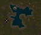

Black Swamp

Quest NPCS
Combat Trainers
Krog Quest
Warrior of Krog
| Difficulty | Skills |
|---|---|
| Apprentice | Combat |
| NPC Quest Start | Monster | Reward |
|---|---|---|
| Targon | Many different creatures |

 ">
">
">
">


 ">
">
">
">

|
 Speak to Targon; If you wish to speak with me, go align yourself with our cause! The Krog Steward is always found by the spawn gates and will gladly take your name.
Speak to Targon; If you wish to speak with me, go align yourself with our cause! The Krog Steward is always found by the spawn gates and will gladly take your name.  Welcome to Krog! You made a good choice to start here. Me Steward, Steward of this city.
Watch over people and help them. Orcs are brave...too brave, maybe. Most have left on journeys outside the city. None left to protect us from bad things. You! You look srong, and brave. Will you join Krog, and help? The stinking humans and elves probably try to recruit you, too, but Krog is the best to choose! If you join Krog, you will be stronger with 1 extra orb of Strength. Your strength will be able to reach 101.
Once you make a choice, you cannot change your mind. Choose wisely... Will you join us? When you chose Krog you will be rewared.
Welcome to Krog! You made a good choice to start here. Me Steward, Steward of this city.
Watch over people and help them. Orcs are brave...too brave, maybe. Most have left on journeys outside the city. None left to protect us from bad things. You! You look srong, and brave. Will you join Krog, and help? The stinking humans and elves probably try to recruit you, too, but Krog is the best to choose! If you join Krog, you will be stronger with 1 extra orb of Strength. Your strength will be able to reach 101.
Once you make a choice, you cannot change your mind. Choose wisely... Will you join us? When you chose Krog you will be rewared.
- You have gained the strength of Krog
- You have gained 500 faction with the city of Krog
- 3,609 Experience Pool experience may very
QUEST RECEIVED: Warrior of Krog, Lord Targon of Krog asks you to slay x amount of Creatures.
Speak to Targon, he now calls you a loyal servant of Krog. He needs brave warriors willing to seek out and slay the foul creatures that plague us. He ask if you are willing to help. If you accept his request he will ask you to slay different amounts and types of creatues for him.
His rewards are experience points and Faction points. His quest are repeatable to gain more experiance and Faction points for the city. When slaying the creatures you will be updated QUEST UPDATE: Kill X more Creature for Lord Targon of Krog. When you have slain all of the creatures required
you will be updated.
QUEST RECEIVED: Warrior of Krog, Return to Lord Targon in Krog!
Targon praises you for you a job well done.
You have gained faction with Krog for your heroic work! See Lady Targon of Maraket about a reward.
- You have gained X amount of faction with the city of Krog
- Ramdon Amounts Experience Pool experience may very
 Follow the path south to Maraket and Speak to Lady Targon in the bank. She will greet you and reward you for you loyal patronage. Your reward are pieces of the Krog Armor. You will recieve a new pieces at diffent stages of your faction points.
Follow the path south to Maraket and Speak to Lady Targon in the bank. She will greet you and reward you for you loyal patronage. Your reward are pieces of the Krog Armor. You will recieve a new pieces at diffent stages of your faction points.
- 500 Faction Points Necklace of Krog
- 800 Faction Points Ring of Krog
- 1300 Faction Points Gloves of Krog
- 1800 Faction Points Belt of Krog
- 2300 Faction Points Helm of Krog
- 2800 Faction Points Boots of Krog
- 3300 Faction Points Cloak of Krog
- 3800 Faction Points Guardian of Krog
- 4300 Faction Points Leggings of Krog
- 4800 Faction Points Armor of Krog
Quest Complete
Leonard is Lost
| Difficulty | Skills |
|---|---|
| Apprentice | Searching |
| NPC Quest Start | Reward |
|---|---|
| Oonga |

|
 Speak to Oonga He is crying about someone or something named Leonard. Leonard is Oonga special friend. He is hiding from Oonga help him find Leonard.
He gives you a hint that Leonard is lazy and likes to take a nap in a barrel-thing.
Speak to Oonga He is crying about someone or something named Leonard. Leonard is Oonga special friend. He is hiding from Oonga help him find Leonard.
He gives you a hint that Leonard is lazy and likes to take a nap in a barrel-thing.
QUEST RECEIVED: Leonard is Lost, You agreed to help Oonga of Krog find Leonard, a lost pet.
There are many barrels in the town to search. The barrel you are looking for is the one on the west side of the government hall.
When you search the barrel. A strong stench flows forth from the barrel as you per inside. At the bottome lies what looks like it may have been a squirrel at one time. You gently pick up the partially decayed remains,
brushing flies away with your other hand. Placeing the carcass into a small leather sack, you ponder how you will break the news to Oonga.
QUEST UPDATE: Leonard is Lost, Return to Oonga with Leonard's remains.
He thanks you for finding Leonard and scoldes Leonard for being a bad pet.
- Gold Received: 350
- You have gained 250 faction with the city of Krog
- 660 Experience Pool experience may very
You reunited Oonga with Leonard.
Quest Complete
Reclaiming What's Mine
| Difficulty | Skills |
|---|---|
| Apprentice | Searching |
| NPC Quest Start | Reward |
|---|---|
| Ivogur |

|
Speak to Ivogur He ask you to make sure all his supplies are still there. 5 crates of supplies. His memory is not so good, he can't remember where they are. He will give good reward.
QUEST RECEIVED: Reclaiming What's mine, The ghost Ivogur who walks the streets of Krog asked you to locate 5 supply crates in his mine.
His mine is south east of Krog. Follow the path south just before you get to Maraket. Turn east and follow the south side of the mountain and you will come to his mine. See this map of the location
Once in side use this map to locate all the supplies.  There are Cave Spiders (lvl 8), Cave Slugs (lvl 11), and Bats (lvl 1) in this cave.
The cave is not to difficult to navigate. It can get dark in some places, but there are a few things that produce light in this cave. Bring a tourch if you think you need one, but you wont really need it. Head north west to supplie crate number 3 first.
When you find it you will be updated.
There are Cave Spiders (lvl 8), Cave Slugs (lvl 11), and Bats (lvl 1) in this cave.
The cave is not to difficult to navigate. It can get dark in some places, but there are a few things that produce light in this cave. Bring a tourch if you think you need one, but you wont really need it. Head north west to supplie crate number 3 first.
When you find it you will be updated.
QUEST UPDATE: You have located a Supply Crate for Ivogur.
Go back to the entrance of the cave and head south west go for crate number 5 next then to number 4. Number 4 has a trap door next to it you will need to enter to beable to get to crates 1 and 2. Once you go down the trap door you can chose to go north for number 2 or go east for number 1.
It won't matter you will have to backtrack to get each one anyway. Once you find them both you will be updated to return to Ivogur in Krog.
QUEST UPDATE: Reclaiming What's Mine, Return to Ivogur in Krog.
Ivogur is waiting for news of his supplies. He is greatful for the good news they are still there. Take this gold for reward and more in crate.
- Gold Received: 1500
- You have gained 200 faction with the city of Krog
- 39,600 Experience Pool experience may very
Head south between the moutain and the building closest to the moutain, there will be Ivogur's Crate. Check it and you are rewarded.
- Hard Leather Cap
Your help has allowed Ivogur to enter his rest.
Quest Complete
Formidable Formicidae
| Difficulty | Skills |
|---|---|
| Apprentice | Combat |
| NPC Quest Start | Monster | Reward |
|---|---|---|
| Oonga | Fire Ant (lvl 8) |

|
 Speak to Haburt he has a problem and he says you owe hime for since you scared him. There is a fire ant colony south of Krog that is growning out of control.
He can't miss one day or he is in for it. He wants a teensy break. He ask if you can help squash them to give him a break.
Speak to Haburt he has a problem and he says you owe hime for since you scared him. There is a fire ant colony south of Krog that is growning out of control.
He can't miss one day or he is in for it. He wants a teensy break. He ask if you can help squash them to give him a break.
QUEST RECEIVED: Formidable Formicidae, Head south of Krog and kill 40 Fire Ants for Haburt.
Check this map for the location of the Fire Ant colony. Be careful not to get swarmed by the fire ants.  They can easily overwhelm you if your not careful. Watch out for the one spawn of the Large Fire Ant.
They can easily overwhelm you if your not careful. Watch out for the one spawn of the Large Fire Ant. Kill 40 you will be updated along the way to let you konw how many you have killed.
QUEST UPDATE: You have killed 40 Fire Ants for Haburt
QUEST UPDATE: Formidable Formicidae, You have killed 40 Fire Ants for Haburt. Return to him in Krog.
When you return to Haburt he has a big surprise for you. He says you are now friends. He gives you some bracers made from ant legs.
- Ant Leg Bracer
- 700 Gold
- You have gained 500 faction with the city of Krog!
- 39,600 Experience Pool experience may very
Quest Complete
Sting Operation
| Difficulty | Skills |
|---|---|
| Apprentice | Combat |
| NPC Quest Start | Monster | Reward |
|---|---|---|
| Jessicugh | Scorpions (lvl 5), Schlag the Scorpioness (lvl 20) |
Speak to Jessicugh she ask you for a favor. She sent a scout name Mutugchugugh to find scorpions. He found entrance to the nest to the north, but not come back. Go find out what happend to Mutugchugugh.
QUEST RECEIVED: Sting Operation, Find Mutugchugugh, who was last seen scouting a scorpion nest to the north of Krog.
Head out the north gate and stick to the mount side and you will reach the scorpion nest in no time.  Enter the nest, this nest
is not hard to navigate. There are Scorpions and their mother Schlag the Scorpioness. Head south you will come across bones on the ground, examine them and you will find that one of them is Mutugchugugh.
Enter the nest, this nest
is not hard to navigate. There are Scorpions and their mother Schlag the Scorpioness. Head south you will come across bones on the ground, examine them and you will find that one of them is Mutugchugugh.
QUEST UPDATE: Sting Operation, You found the corpse of Mutugchugugh, Return to Jessicugh in Krog
When you return to Jessicugh she is disappointed he is dead and that she has no way of gathering scorpion stingers. She then task you to fetch 20 scorpion stingers, so she can make potions. It took to long last time
here lamp to guide in dark nest.
- Lamp of Isos
- 2,640 Experience Pool experience may very
QUEST UPDATE: Sting Operation, Bring 20 Scorpion Stingers to Jessicugh
You can find Scorpions all around Krog, or go back to the nest and kill them. Once you have collected 20 Scorpion Stingers you will be updated.
QUEST UPDATE: You have collected enough Scorpion Sting to complete the quest.
Return to Jessicugh. Drag the 20 scorpion Stingers on to her. She rewards you with Potions.
- Potion of Cure Greater Poison
- Potion of Cure Greater Disease
- 30 Potions of Greater Healing
- 2,640 Experience Pool experience may very
QUEST UPDATE: Sting Operation, Speak to Jessicugh again.
Speak to Jessicugh one more time. She wants to go collect more scorpion stingers on her own, but she needs you to kill the mother of the nest.
Schlag the Scorpioness
QUEST UPDATE: Sting Operation, Kill Schlag the Scorpioness for Jessicugh
Head back to the nest and look for Schlag the Scorpioness  When you fight her, she will spawn more Scorpions and will poison you. It would be a good
idea to bring your Potion of Cure Greater Poison with you just in case. Once you kill her you will be updated.
When you fight her, she will spawn more Scorpions and will poison you. It would be a good
idea to bring your Potion of Cure Greater Poison with you just in case. Once you kill her you will be updated.
QUEST UPDATE: Sting Operation, You've exterminated Schlag the Scorpioness, Return to Jessicugh in Krog
Jessicugh is happy that Schlag is dead. She can now go gather scorpion stingers on her own. She can now become a mighty Orc Alchemist. She gives you repair potions.
- 20 Potions of Greater Repair
- You have gained 500 faction with the city of Krog!
- 21,780 Experience Pool experience may very
You enabled Jessicugh to perfect her alchemical skills.
Quest Complete
Protect Krog!
| Difficulty | Skills |
|---|---|
| Apprentice | Combat |
| NPC Quest Start | Reward |
|---|---|
| Warrog |
|
 Speak to Warrog ask if you would take up arms against evil and strike a blow for the great Orc city of Krog! Evil creatures attack people as they travel to and from the city. Many younglings have perished merely by travelling though the nearby plains and hills.
He wants you to seek out and kill a Kobold, a Snake, and a Bat.
Speak to Warrog ask if you would take up arms against evil and strike a blow for the great Orc city of Krog! Evil creatures attack people as they travel to and from the city. Many younglings have perished merely by travelling though the nearby plains and hills.
He wants you to seek out and kill a Kobold, a Snake, and a Bat.
QUEST RECEIVED: Protect Krog!, Show your prowess to Warrog a priest in Krog! Hunt a Kobold, Snake, and Bat.
You shall find Kobolds to the south, and Snakes  and Bats
and Bats  roam freely across the plains.When you kill one of the creatures you will recieve an update.
roam freely across the plains.When you kill one of the creatures you will recieve an update.
QUEST UPDATE: You have slain a Snake for Krog!
QUEST UPDATE: You have slain a Bat for Krog!
QUEST UPDATE: You have slain a Kobold for Krog!
When all three have been slan you will recieve the final update to return to Warrog to recieve your reward.
QUEST UPDATE: Protect Krog!, You have completed Warrog's Quest! Return to the Temple of Ulthien.
What have you killed so far... You have killed a kobold! You have killed a snake! You have killed a bat! You have proven yourself for Krog! If you have need of my services, you know
where to find me! As alwasy, may Ulthien bless and guide you.
- You have gained 200 faction with the city of Krog
- 6,600 Experience Pool experience may very
You were blessed by Warrog for protecting Krog. Return to Warrog for healing when needed.
Quest Complete
Tree Trouble
| Difficulty | Skills |
|---|---|
| Apprentice | Searching |
| NPC Quest Start | Reward |
|---|---|
| Alchemist Singaford |
">
|
Speak to Alchemist Singaford, he is an Alchemist from Jeel. He specializes in plants and plant-borne illnesses. He has been requested to help with a problem. Apparently some of the trees along the path to Maraket have been afflicted with some rare and new disease.
If not dealt with swiftly this could seriously damage the ecology and have a serious effect on the local wildlife. He needs you to travel the path to Maraket, when you find an afflicted tree scrape the trunks and collect a sample from the 3 types of trees. 
QUEST RECEIVED: Tree Trouble, Bring 3 samples of afflicted trees found near Krog to Chief Researcher Dnader in Maraket.
Use this map to help you find the three trees. Head out the west side of Krog then south. Just to the west near the Sewer entrance is your fist tree.
You will be updated you have located an afflicted tree.
QUEST UPDATE: You collect a sample from the Afflicted Cedar Tree!
The next tree is just a little ways to the south east, south of the ants. Find the afflicated Tree and you will be updated
QUEST UPDATE: You collect a sample from the Afflicted Peach Tree!
The final tree is just off of the path on the west side right before getting to Maraket. Find the afflicated Tree and you will be updated
QUEST UPDATE: You collect a sample from the Afflicted Oak Tree!
QUEST RECEIVED: Tree Trouble, You have collected all 3 samples! Take thme to Dander in Maraket.
Head in to Maraket then to the Magic shop to find Chief Researcher Dander. He can now run his experiments. After running the experiments he finds out that there are tiny organisms scattered throughout the samples.
Take the samples to Alchemist Singaford he will handle the rest.
QUEST RECEIVED: Tree Trouble, Take the Tree Report to Alchemist Singaford in Krog.
Once you reach Alchemist Singaford he thanks you for the assistance and rewards you for your help.
- Naturalist Greaves
- 500 Gold
- You have gained 200 faction with the city of Krog
- 9,900 Experience Pool experience may very
You helped researchers understand the disease affecting trees near Krog.
Quest Complete
Swamped
| Difficulty | Skills |
|---|---|
| Apprentice | Combat |
| NPC Quest Start | Reward |
|---|---|
| Rumpda |

|
Speak to Rumpda, she needs help with a problem and demands you to help. She has a nice present she will give you. The creatures have invaded the swamp; it is her favorite spot!
She needs you to kill 10 Swamp Slugs.
QUEST RECEIVED: Swamped, Kill 10 Swamp Slugs for Rumpda of Krog.
Go out of Krog to the west then head northwest. The swamps have all kinds of creature but you are on the hunt for the Swamp Slugs.
As you kill the Swamp Slugs you will be updated on the count. QUEST UPDATE: You've killed 10 Swamp Slugs for Rumpda. When you have kill 10 you will receive a quest update.
QUEST UPDATE: Swamped, You have squished all 10 Swamp Slugs. Return to Rumpda!
Rumpda is glad to you back. Now she has a problem with the lights in the Swamp. She wants you to take care of the Marsh Lights. Kill 10 of them.
QUEST UPDATE: Swamped, Rumpda rewarded you. Return for more work!
- 300 Gold
- 3,960 Experience Pool experience may very
QUEST UPDATE: Swamped, Kill 10 Marsh Lights for Rumpda.
Head back out to the swamp and kill Marsh Lights getting updates along the way. QUEST UPDATE: You've killed 10 Marsh Lights for Rumpda. Once you have completed your task you will be updated to Return to Rumpda
QUEST UPDATE: Swamped, You have put out the Marsh Lights. Return to Rumpda in Krog!
You helped Rumpda again and now she likes you Come back for more work if you are bored.
QUEST UPDATE: Swamped, Rumpda rewarded you for your help. Return for another task.
- 350 Gold
- 7,920 Experience Pool experience may very
The stupid Lizard Man broke Rumpda's cloths line. She wants you to make them go away. Kill 10 of them
QUEST UPDATE: Swamped, Kill 10 Lizard Men for Rumpda.
Head back out to the swamp and kill Lizard Man getting updates along the way. QUEST UPDATE: You've killed 10 Lizard Man for Rumpda. Once you have completed your task you will be updated to Return to Rumpda
QUEST UPDATE: Swamped, Rumpda's clothesline has been avenged. Return to Rumpda
She thanks you. There is one more job for you. Come back if you want!
QUEST UPDATE: Swamped, Rumpda rewarded you for your help. Return for one more job!
- 400 Gold
- 11,880 Experience Pool experience may very
The swamp is almost safe for Rumpda again but one big problem. Big mossy creature steal Rumpda's raisins when she at swamp. She wants you to hunt down swamp-man. Kill 10 Shamblers and teach them a lesson for stealing raisins!
QUEST UPDATE: Swamped, Kill 10 Shamblers for Rumpda.
Head back out to the swamp and kill Shamblers getting updates along the way. QUEST UPDATE: You've killed 10 Shamblers for Rumpda. Once you have completed your task you will be updated to Return to Rumpda
QUEST UPDATE: Swamped, You have killed 10 raisin stealing Shamblers. Return to Rumpda in Krog.
You do all Rumpda ask. She is grateful and she found her raisins.
- Bloody Rag of Rumpda
- 600 Gold
- 15,840 Experience Pool experience may very
You tidied up the Swamp for Rumpda
Quest Complete
Great Disrepair
| Difficulty | Skills |
|---|---|
| Apprentice | Combat |
| NPC Quest Start | Reward |
|---|---|
| Prudge |
">
|
Speak to Prudge, he needs help fixing the swewer, it keeps flooding swamps to the west now they are blaming Prudge.
He needs you to fix the levers in the tunnel, but he doesn't remember the order to pull the levers he sends you to speak to his aunt Kekant in Krog.
QUEST RECEIVED: Great Disrepair, Prudge does not remember how to pull levers to fix the Krog Sewer, but his Aunt Rekant might. Vist her in Krog.
Aunt Rekant can be found upstairs in the Provisioner shop. Let her know you are here to help her nephew. She will only help you if you help her. Her husband Unga went to Maraket to find work and has not come back. Her friend Aloca said he is going around with a new girl. Go find out for her and she will help you out.
QUEST RECEIVED: Great Disrepair, Find out if Unga in Maraket has a new woman.
Head south to Maraket and find Unga. He will ask you if you want to make some gold. Accept his offer then he will ask you to take a note to Teppu. He and Teppu had a fight and she is avoiding him. Accept the offer to take the note to Teppu.
QUEST RECEIVED: Great Disrepair, Deliver note to Teppu in Maraket.
Give the note to Teppu, she reads it tells you Unga is so sweet that he wants to marry her.
- OPTION: 1 Tell her Unga is already married.
- OPTION: 2 Tell her she is one lucky lady.
OPTION: 1
WHAT? He told me my sister fall into Wuhn's sewer and never come out. She goes off to deal with both of them. She rewards you with 1000 gold for telling her about this.
QUEST RECEIVED: Great Disrepair, Return to Unga in Maraket.
When you return to Unga he is not happy you told her about Rekant, says he should run a sword though you good!
- 1,000 Gold
- 550 Experience Pool experience may very
OPTION: 2
QUEST RECEIVED: Great Disrepair, Return to Unga in Maraket.
Speak to Unga, he ask if you gave her the note. You tell him that she is madly in love with him. He says he is good with the ladies and you saved him this time.
- 100 Gold
- 990 Experience Pool experience may very
QUEST RECEIVED: Great Disrepair, Return to Rekant in Krog.
Speak with Rekant in Krog. You inform her that Unga is with a new girl. She said she would head to Maraket and skin him like a warg! Her brother Wuhn will help with the exact order of levers. Tell him you are a fiend of Rekant and she owes you a favor.
QUEST RECEIVED: Great Disrepair, Speak with Wuhn in Krog about the sewer levers.
Find Wuhn outside of the provisioner shop walking around. He talks about how he has told Prudge many times of the lever order. He gives you the order that is required. A-F-B-D-E-C
- 1,980 Experience Pool experience may very
QUEST RECEIVED: Great Disrepair, Wuhn told you the order of the sewer levers: A-F-B-D-E-C.
Retun to the sewer if you want to you can talk to Prudge but you don't have to. Go down the ladder in to the bottom layer of the Sewer. Provided is a map of the location of the switches. There are many different types of creatures in the sewers. If you are low level be carefull if you are on your own. At each lever there is a sign that has the label of the leter on the wall. When you pull the lever you will get an update.
- Lever AThe sound of flowing water seems to be lessening
- Lever FThe sound of flowing water seems to be lessening
- Lever BThe sound of flowing water seems to be lessening
- Lever DThe sound of flowing water is very faint
- Lever EThe sound of flowing water is almost nonexistent
- Lever CThe sound of flowing water ceases
- Large Knapsack
- 1,000 Gold
- You have gained 500 faction with the city of Krog!
- 79,200 Experience Pool experience may very
You helped Prudge fix the sewer!
Quest Complete
Hole of Tears
| Difficulty | Skills |
|---|---|
| Apprentice | Roasting |
| NPC Quest Start | Reward |
|---|---|
| Kobold Prisoner |
|
Speak to Kobold Prisoner, He knows a secret, his secret is locked in a hole of tears. Tears ran dry and he was sacrificed to bring back tears.
His secret is his doom. He will give you secret if you bring him treats. He wants five yummy roasted spider legs, bring them to him; he will tell you secret!
QUEST RECEIVED: Hole of Tears, Bring 5 Cooked Spider Legs to the Kobold Prisoner.
Once you give him the five Cooked Spider Legs he will be happy and tell you his secret, It is a dry well in the elder camp to the south, but there is also great evil in there.
- 1,320 Experience Pool experience may very
The prisoner revealed that the dry well in the Kobold camp southeast of Krog is a secret entrance to and evil place.
Quest Complete
Agon's Hand
| Difficulty | Skills |
|---|---|
| Apprentice | Combat |
| NPC Quest Start | Reward |
|---|---|
| Minion of Agon |
|
You can find the Minion of Agon down the dry well at the Kobold Camp. Speak to the Minion of Agon, his master has a small request. a pack of foul kobolds invaded this complex and stole pages from the Book of Agon.
He suspects one of the pitiful Cultist followers are assisting the kobold thieves. You will act as Agon's Hand Return the pages
QUEST RECEIVED: Agon's Hand, Confront Cultists in the Shadow Temple southeast of Krog about pages torn from the Book of Agon.
Kill the Cultists  with in this complex. As you kill them you will be updated The cultist seems to know nothing of the sacred pages...
when you kill the correct one you will be updated QUEST UPDATE: The Cultist looks at you with fear in his eyes. A.. gasp ...Kobold Brigand... unnghh... has the pages... Agon forgive me...
with in this complex. As you kill them you will be updated The cultist seems to know nothing of the sacred pages...
when you kill the correct one you will be updated QUEST UPDATE: The Cultist looks at you with fear in his eyes. A.. gasp ...Kobold Brigand... unnghh... has the pages... Agon forgive me...
QUEST RECEIVED: Agon's Hand, The cultist revealed that a Kobold Brigand has the stolen pages from the Book of Agon.
Kill the Kobold Brigands at the Kobold Camp. As you kill them you will be updated You found nothing of note on this Kobold Brigand
when you kill the correct one you will be updated QUEST UPDATE: You find a dirty scrap of paper with almost indecipherable writing. The page reads... We wreck old temple, Dragoon buy pages for good price
QUEST RECEIVED: Agon's Hand, Seek the Dragoon who purchased the stolen pages.
Kill the Dragoons  at the swamp northwest of Krog. As you kill them you will be updated You search for pages from the Book of Agon but do not find anything...
when you kill the correct one you will be updated QUEST UPDATE: You find several withered pages of the Book of Agon!
at the swamp northwest of Krog. As you kill them you will be updated You search for pages from the Book of Agon but do not find anything...
when you kill the correct one you will be updated QUEST UPDATE: You find several withered pages of the Book of Agon!
QUEST RECEIVED: Agon's Hand, You find several withered pages of the Book of Agon! Return them to the Minion of Agon!.
The Minion of Agon is very pleaded you have found the pages. Agon grants you access to his worldly sanctuary. Seek his knowledge in the lower temple.
- 55,000 Experience Pool experience may very
Seek the 'Shadow of Agon' in the lower sanctuary...
Quest Complete
Agon's Test
| Difficulty | Skills |
|---|---|
| Apprentice | Combat |
| NPC Quest Start | Reward |
|---|---|
| Shadow of Agon |
">
 ">
">
">
">
|
Speak to the Shadow of Agon, he seeks to know your devotion to his cause. He asks that you be put though the sacred test to prove your worth. Agon Demands much from his subjects.
He has devised a way to demonstrate your power and loyalty to Agon. The first test is the Test of Battle.
QUEST RECEIVED: Agon's Test, Kill 5 shadows to prove yourself to Agon.
You are teleported to a room on your own and attacked by shadows  Kill the 5 shadows that appear then you will
be teleported back to the Shadow of Agon.
Kill the 5 shadows that appear then you will
be teleported back to the Shadow of Agon.
QUEST RECEIVED: Agon's Test, The test is complete. Return to the Shadow of Agon
- Shadow Cloak
- 11,000 Experience Pool experience may very
You have demonstrated your power to Agon! Agon has chosen to reward you with a small gift.. He will allow you to continue to serve him. You must prove your loyalty. Make the Kobolds pay by eliminating their village. The second test is the Test of War
QUEST RECEIVED: Agon's Test, Avenge Agon by destroying thieving Kobolds. Slay 100 in the village that sits atop the temple.
Leave the complex by way of the Dry well in the Kobold Camp. Kill 100 Kobolds in the camp. As you kill them you will be updated Agon's hunger for vengeance has been fed with 100 Kobolds!
QUEST RECEIVED: Agon's Test, Agon is now satisfied. Bring news of the Kobold annihilation to the Shadow of Agon.
- Shadow Gloves
- 22,000 Experience Pool experience may very
Agon's great anger against the Kobolds has been quenched. Agon has chosen to reward you with a small gift. Wearing it will foretell your power to our enemies! Now a final test is required of you. Agon allows no others to be worshipped in his presence. The rebellious Orcs of Krog refuse to bow to Agon's might. THey cower under the pretentious light of Ulthien, a most detestable deity. Make them pay for their insolence! You must act as Agon's hand and punish the Orcs. I suggest attacking the outpost guards. This is the Test of Insubordination
QUEST RECEIVED: Agon's Test, As Agon's Hand, you must punish the Orcs for worshipping Ulthien! Attack an Orc outpost.
Return to Krog then head to the far north Orc Outpost. Attack the guard, if you can run away after attacking do this. If not you will be sent to jail. If you get away then return to the Shadow of Agon. If not wait your time out in jail then tak the long run back to the Shadow of Agon.
QUEST RECEIVED: Agon's Test, You attempted to punish the Orcs by striking at the Orc Guards.
Your skills have proven you worthy. Agon has chosen to reward you with a small gift..
- Shadow Helm
- Shadow Leggings
- 22,000 Experience Pool experience may very
Agon rewarded you for your loyalty.
Quest Complete
Payment in Full
| Difficulty | Skills |
|---|---|
| Adept | Combat |
| NPC Quest Start | Reward |
|---|---|
| Dunaga | "> |
Speak to Dunaga, in Maraket He needs a favor done. He did some business with Kobolds to the west, but they did not pay him. He built the big fort for them and Dunaga needs money.
QUEST RECEIVED: Payment in Full, Find the Kobold Fort west of Maraket dunaga expects payment from the Kobold Chief.
Head out to the west, stay more north and you will run in the "BIG FORT". When you get their you want to
look for the Chief's hut. Go inside and up the ladder.
He will be their with two Kobold Brigands. If he is not their he is on a 1 hour timer. Hang around for an hour or so until he spawns.
Once you kill him you will find a small scrap of paper.
QUEST UPDATED: Payment in Full, You found a small scrap of paper. Return to Dunaga in Maraket.
When reach Maraket, speak to Dunaga. He will not be happy with the small scrap of paper. It is a Kobold bank note, Dunaga can't do anything with this, so no reward for you now.
- OPTION: 1 That's ok. I'm not interested in a reward..
- OPTION: 2 Tell her she is one lucky lady.
OPTION: 1
He says you are very wise I no get paid, you no get paid, but at least dirty Chief is dead...
- You have gained 500 faction with the city of Krog
- 16,500 Experience Pool experience may very
OPTION: 2
He was only kidding, we had deal. Here is your reward, I have old junk cap for you...
- Dunaga's Cap
- 11,550 Experience Pool experience may very
Quest Complete
Moklad is Missing
| Difficulty | Skills |
|---|---|
| Apprentice | Combat |
| NPC Quest Start | Reward |
|---|---|
| Jeqa or Moklad's Journal | EXP |
Speak to Jeqa, in Samad. She is worried about her husband Moklad. He has been gone for weeks. He left for simple bat hunt and not return. Last she head they headed off to the east.
QUEST RECEIVED: Moklad is Missing, You met Jeqa the Orc in Samad, who asked you to find her husband Moklad the Bat Hunter.
Head out to the east following the road untill you hit the mountain range. Search north in one of the mountain crevices.
You will come to a red Book on the ground. You read it and find out it is Moklad's Journal
and his corpse next to the book. Return to Jeqa to inform her of the bad news.
You have found Moklad's Journal. Return to Samad with news.
QUEST RECEIVED: Moklad is Missing, You have found Moklad's Journal. Return to Jeqa in Samad with news..
Return to Jeqa, inform her of her husbands death. She is in tears over the death of Moklad. She ask you to inform his brother Kongodo. He is in dawat.
- 550 Experience Pool experience may very
QUEST RECEIVED: Moklad is Missing, Find Kongodo in the town of Dawat. Tell him the sad news about his brother.
Head out to the east following the road go northeast across the river. Keep following the road east and you will run in to Dawat.
Kongodo is on the north side of the town by the spawn gate. Tell him the bad news that Moklad is dead. He ask if you told this news to his wife. Yes Jeqa sent me to find you. He hopes she is taking this bad news well. He would return to Samad to comfort her, but he is very busy here with work. Perhaps you could tell Jeqa that she is in his thoughts. He thanks you for coming to tell him this dreadful news. Perhaps you will return here to learn more of my work after you have spoken to Jeqa.
- 1,100 Experience Pool experience may very
QUEST RECEIVED: Moklad is Missing, Moklad's brother asked you to give his condolences to Jeqa in Samad.
Return to Jeqa, shes not worried that the news is known. She will try to go on without Moklad.
- 1,100 Experience Pool experience may very
You consoled the widow Jeqa about the loss of her husband.
Quest Complete
The Art of Combat
| Difficulty | Skills |
|---|---|
| Apprentice | Combat |
| NPC Quest Start | Reward |
|---|---|
| Bograhk Dargarkh |

|
Speak to Bograhk Dargarkh he will task you to speak to the 6 orc trainers all over Orc lands.
- Large Blades in Krog Orzgath Mugzluk
- Axes in Krog Tyugh Bruurshk
- Blunt Weapons in Maraket Ulver Muurnahknahk
- Polearms in Maraket Umduhk Dumdumuhk
- Unarmed Combat in Samad Ox Juurnuhk
- Small Blades in Samad Gar-Gar Mootarhk
QUEST RECEIVED: The Art of Combat, Bograhk Dargarkh of Krog invited you to seek out and train with 6 Orc Combat Trainers.
When you have completed all the combat trainers task speak to Bograhk Dargarkh He will reward you with the Orcish Warrior Plate.
- Orcish Warrior Plate
- 35,640 Experience Pool experience may very
Bograhk rewarded your hard work with Orcish Warrior Plate armor!
Quest Complete
Honor In Battle
| Difficulty | Skills |
|---|---|
| Apprentice | Combat lvl 15 large Blades |
| NPC Quest Start | Monsters | Reward |
|---|---|---|
| Orzgath Mugzluk | Krog Rat (11) |


|
 Speak to Orzgath Mugzluk, he will only speak to you if you have 15 in your large blades skill. If you are lvl 15 in your large blades skill he will teach you the way of a large blades user.
He will task you to slice 40 Krog Rats with the Crude Orcish Sword.
Speak to Orzgath Mugzluk, he will only speak to you if you have 15 in your large blades skill. If you are lvl 15 in your large blades skill he will teach you the way of a large blades user.
He will task you to slice 40 Krog Rats with the Crude Orcish Sword.
- Crude Orcish Sword
QUEST RECEIVED: Honor in Battle, Slice 40 Krog Rats in two for Orzgath Mugzluk of Krog with the Crude Orcish Sword.
Head southeast of Krog and you will find some Krog Rats.
 As you slay the Krog Rats you will be updated You have slashed X Krog Rats for Orgath Mugzluk!!
If you kill one with out the Crude Orcish Sword you will be updated with a warning, You must kill Krog Rats with the Crude Orcish Sword to complete Orzgath's training. Once you have killed 40 you will be updated.
As you slay the Krog Rats you will be updated You have slashed X Krog Rats for Orgath Mugzluk!!
If you kill one with out the Crude Orcish Sword you will be updated with a warning, You must kill Krog Rats with the Crude Orcish Sword to complete Orzgath's training. Once you have killed 40 you will be updated.
QUEST UPDATE: Honor in Battle, Return to Orzgath Mugzluk in Krog to complete your training. Speak to Orzgath Mugzluk he will reward you with the Orcish Warrior Belt.
- Orcish Warrior Belt
- 19,800 Experience Pool experience may very
You received training in the art of Sword combat from Orzgath Mugzluk.
Quest Complete
Keep it Sharp
| Difficulty | Skills |
|---|---|
| Apprentice | Combat lvl 15 Axes |
| NPC Quest Start | Monsters | Reward |
|---|---|---|
| Tyugh Bruurshk | Orc Renegade Mage (25) |


|
 Speak to Tyugh Bruurshk, he will only speak to you if you have 15 in your axe skill. If you are lvl 15 in your axes skill he will teach you the way of an axe user.
He will task you to hack apart 50 Orc Renegade Mages with the Crude Orcish Battle Axe.
Speak to Tyugh Bruurshk, he will only speak to you if you have 15 in your axe skill. If you are lvl 15 in your axes skill he will teach you the way of an axe user.
He will task you to hack apart 50 Orc Renegade Mages with the Crude Orcish Battle Axe.
- Crude Orcish Battle Axe
QUEST RECEIVED: Keep it Sharp, Hack apart 50 Orc Renegade Mages with the Crude Orcish Battle Axe for Tyugh Bruurshk of Krog.
Head east though the mountain pass to the shore then head north, you will find Orc Renegades and Orc Renegade Mages. Check this map of the locaion.
 As you hack apart Orc Renegade Mages
As you hack apart Orc Renegade Mages  you will be updated You have hacked X Orc Renegade Mages for Tyugh Bruurshk!
If you kill one with out the Crude Orcish Battle Axe you will be updated with a warning, You must equip the Crude Orcish Battle Axe to complete Tyugh's training. Once you have killed 50 you will be updated.
you will be updated You have hacked X Orc Renegade Mages for Tyugh Bruurshk!
If you kill one with out the Crude Orcish Battle Axe you will be updated with a warning, You must equip the Crude Orcish Battle Axe to complete Tyugh's training. Once you have killed 50 you will be updated.
QUEST UPDATE: Keep it Sharp, Return to Tyugh Bruurshk in Krog to complete your training. Speak to Tyugh Bruurshk he will reward you with the Orcish Warrior Gauntlets.
- Orcish Warrior Gauntlets
- 26,400 Experience Pool experience may very
You have received training in the art of axe combat from Tyugh Bruurshk.
Quest Complete
Crush Skulls
| Difficulty | Skills |
|---|---|
| Apprentice | Combat lvl 15 Blunt Weapons |
| NPC Quest Start | Monsters | Reward |
|---|---|---|
| Ulver Muurnahknahk | Orc Renegade (11) |


|
 Speak to Ulver Muurnahknahk, he will only speak to you if you have 15 in your blunt weapons skill. If you are lvl 15 in your blunt weapons skill he will teach you the way of a blunt weapon user.
He will task you to smash 100 Orc Renegades with the Crude Orcish Skullcrusher.
Speak to Ulver Muurnahknahk, he will only speak to you if you have 15 in your blunt weapons skill. If you are lvl 15 in your blunt weapons skill he will teach you the way of a blunt weapon user.
He will task you to smash 100 Orc Renegades with the Crude Orcish Skullcrusher.
- Crude Orcish Skullcrusher
QUEST RECEIVED: Crush Skulls, Smash 100 Orc Renegades with the Crude Orcish Skullcrusher for Ulver Muurnahknahk of Maraket.
Head east to the shore then head north, you will find Orc Renegades and Orc Renegade Mages. Check this map of the locaion.
As you smash Orc Renegades  you will be updated You have smashed X Orc Renegades for Ulver Muurnahknahk!
If you kill one with out the Crude Orcish Skullcrusher you will be updated with a warning, You must equip the Crude Orcish Skullcrusher to complete Ulver's training. Once you have killed 100 you will be updated.
you will be updated You have smashed X Orc Renegades for Ulver Muurnahknahk!
If you kill one with out the Crude Orcish Skullcrusher you will be updated with a warning, You must equip the Crude Orcish Skullcrusher to complete Ulver's training. Once you have killed 100 you will be updated.
QUEST UPDATE: Crush Skulls , Return to Ulver Muurnahknahk in Maraket to complete your training. Speak to Ulver Muurnahknahk he will reward you with the Orcish Warrior Helm.
- Orcish Warrior Helm
- 30,360 Experience Pool experience may very
You have received training in the art of blunt weapns combat.
Quest Complete
Stay Back
| Difficulty | Skills |
|---|---|
| Apprentice | Combat lvl 15 Polearms |
| NPC Quest Start | Monsters | Reward |
|---|---|---|
| Umduhk Dumdumuhk | Ghost (23) |
">

|
Speak to Umduhk Dumdumuhk, he will only speak to you if you have 15 in your polearms skill. If you are lvl 15 in your polearms skill he will teach you the way of a polearms user. He will task you to kill 50 ghost with the Crude Orcish Spear.
- Crude Orcish Spear
QUEST RECEIVED: Stay Back, Defeat 50 Ghost for Umduhk Dumdumuhk of Maraket with the Crude Orcish Spear.
There is not a very good spawn of ghost in the Black Swamp area. The best place that is good for a low level player is Silvest area. Travel to the Lotor's Summer Palace Portal (LSP).
 When at LSP look for the Silvest Portal and enter.
You be walking all the way to the Eastern side of the island. There is a town call East Watch you will come to when you get their. Now south of east watch is the Valley of the Dead, this is were you will find lots of Ghost. Check this map of the locaion.
When at LSP look for the Silvest Portal and enter.
You be walking all the way to the Eastern side of the island. There is a town call East Watch you will come to when you get their. Now south of east watch is the Valley of the Dead, this is were you will find lots of Ghost. Check this map of the locaion.  As you defeat Ghost you will be updated You have killed X Ghost for Umduhk Dumdumuhk!
If you kill one with out the Crude Orcish Spear you will be updated with a warning, You must equip the Crude Orcish Spear to complete Umduhk's training. Once you have killed 50 you will be updated.
As you defeat Ghost you will be updated You have killed X Ghost for Umduhk Dumdumuhk!
If you kill one with out the Crude Orcish Spear you will be updated with a warning, You must equip the Crude Orcish Spear to complete Umduhk's training. Once you have killed 50 you will be updated.
QUEST UPDATE: Stay Back, Return to Umduhk Dumdumuhk in Maraket to collect your reward. Speak to Umduhk Dumdumuhk he will reward you with the Orcish Warrior Cape.
- Orcish Warrior Cape
- 26,400 Experience Pool experience may very
You have received training in the art of polearm combatr from Umdumuhk.
Quest Complete
Never Stop
| Difficulty | Skills |
|---|---|
| Apprentice | Combat lvl 15 Unarmed Combat |
| NPC Quest Start | Monsters | Reward |
|---|---|---|
| Ox Juurnuhk | Goblin Warriors (19) |
 ">
">
|
Speak to Ox Juurnuhk, he will only speak to you if you have 15 in your Unarmed Combat skill. If you are lvl 15 in your Unarmed Combat skill he will teach you the way of an Unarmed Combat user. He will task you to kill 100 Goblin Warriors with the Crude Orcish Punching Daggers.
- Crude Orcish Punching Daggers
QUEST RECEIVED: Never Stop, Ox Juurnuhk of Samad assigned you to pummel 100 Goblin Warriors with the Crude Orcish Punching Daggers.
The best place to fight Goblin Warriors is around Goblin lake.  Head east out of Samad following the road southeast to the spawn gate. Go south from the spawn gate and you will be at Goblin Lake. As you defeat Goblin Warriors
 you will be updated You have killed X Goblin Warriors for Ox Juurnuhk!
If you kill one with out the Crude Orcish Punching Daggers you will be updated with a warning, You must equip the Crude Orcish Punching Daggers to complete Ox's training. Once you have killed 100 you will be updated.
you will be updated You have killed X Goblin Warriors for Ox Juurnuhk!
If you kill one with out the Crude Orcish Punching Daggers you will be updated with a warning, You must equip the Crude Orcish Punching Daggers to complete Ox's training. Once you have killed 100 you will be updated.
QUEST UPDATE: Never Stop, Return to Ox Juurnuhk in Samad to collect your reward. Speak to Ox Juurnuhk he will reward you with the Orcish Warrior Greaves.
- Orcish Warrior Greaves
- 85,800 Experience Pool experience may very
You have received training in the art of Unarmed Combat from Juurnuhk.
Quest Complete
Stick Jab Twist
| Difficulty | Skills |
|---|---|
| Apprentice | Combat lvl 15 Small Blades |
| NPC Quest Start | Monsters | Reward |
|---|---|---|
| Gar-Gar Mootarhk | Goblin (16) |
">

|
 Speak to Gar-Gar Mootarhk, he will only speak to you if you have 15 in your Small Blades skill. If you are lvl 15 in your Small Blades skill he will teach you the way of a Small Blades user.
He will task you to kill 50 Goblins with the Crude Orcish Dagger.
Speak to Gar-Gar Mootarhk, he will only speak to you if you have 15 in your Small Blades skill. If you are lvl 15 in your Small Blades skill he will teach you the way of a Small Blades user.
He will task you to kill 50 Goblins with the Crude Orcish Dagger.
- Crude Orcish Daggers
QUEST RECEIVED: Stick Jab Twist, Stick 50 Goblins for Gar-Gar Mootarhk of Samad with the Crude Orcish Dagger.
The best place to fight Goblin Warriors is around Goblin lake. Head east out of Samad following the road southeast to the spawn gate. Go south from the spawn gate and you will be at Goblin Lake. As you defeat Goblins you will be updated You have killed X Goblins for Gar-Gar Mootarhk! If you kill one with out the Crude Orcish Dagger you will be updated with a warning, You must equip the Crude Orcish Dagger to complete Gar-Gar's training. Once you have killed 50 you will be updated.
QUEST UPDATE: Stick Jab Twist, Return to Gar-Gar Mootarhk in Samad to collect your reward. Speak to Gar-Gar Mootarhk he will reward you with the Orcish Warrior Boots.
- Orcish Warrior Boots
- 26,400 Experience Pool experience may very
You have received training in the art of Small Blades combat from Mootarhk.
Quest Complete